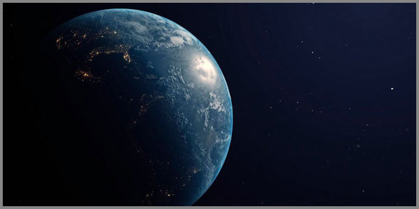

14. Զրոյական Հավանականությունը Որպես Անհրաժեշտություն
 |
Ֆրանսիացի մաթեմատիկոս, աստղագետ և փիլիսոփա Պիեռ-Սիմոն Լապլասը ով մաթեմատիկական հավանականության տեսության հայրն է, 1814 թվականին ձևակերպելով իր հայտնի դետերմինիզմի սկզբունքը, ենթադրեց մի մտածածին գերբանական էակի՝ «Լապլասի հրեշի» գոյությունը, որն իմանալով ժամանակի յուրաքանչյուր պահին տիեզերքի յուրաքանչյուր մասնիկի դիրքը և արագությունը, ի վիճակի է հաշվարկի միջոցով իմանալու տիեզերքի էվոլյուցիան և ընդունակ է ճանաչելու տիեզերքի բոլոր մասնիկների դիրքն ու արագությունը համաձայն Նյուտոնի օրենքների, կանխատեսելով ապագան բացարձակ ճշգրտությամբ:
Սակայն 20-րդ դարը, իր քվանտային հեղափոխությամբ, ջախջախեց այդ մեխանիկական տիեզերքի պատկերը: Պարզվեց, որ բնության ամենախորքային հիմքերում տիրում է սկզբունքային անորոշություն, և պատահականությունը դադարեց պարզապես թյուրիմացություն լինելուց: Սակայն չլուծված մնաց մի հարց, որը դուրս է թե՛ դասական, թե՛ քվանտային ֆիզիկայի շրջանակից: Իսկ ի՞նչ, եթե հենց այդ պատահականությունն է միակ մեխանիզմը, որով անհրաժեշտությունը դրսևորվում է:
Այս տեքստը բխում է մի զարմանալի դիտարկումից: Եթե մի իրադարձության մաթեմատիկական հավանականությունը ձգտում է զրոյի, մենք այն անվանում ենք «անհնար»: Բայց եթե այդ նույն իրադարձությունը, հակառակ բոլոր կանխատեսումների, տեղի է ունենում, ապա արդյո՞ք մենք իրավունք ունենք այն շարունակել անվանել «պատահականություն»: Թե՞ պետք է ընդունենք, որ մեր «զրոյական հավանականությունը» պարզապես սխալ էր, քանի որ այն, ինչ կատարվել է, արդեն իսկ ապացուցել է իր անհրաժեշտ լինելը:
Այսինքն՝ հենց այն փաստը, որ դու կաս, որ այս տառերը կարդում ես, որ այս անհավանական Տիեզերքը գոյություն ունի, բավարար ապացույց է, որ անհնարինը ոչ միայն հնարավոր է եղել, այլև՝ անխուսափելի:
Այս պատկերացման մեջ պատահականությունը միայն մարդկային անգիտության արգասիք է, իսկ իրականությունն ամբողջությամբ ենթարկվում է անխուսափելի երկաթե անհրաժեշտությանը:
Հավանականության պատրանքը
Մենք ծնվել ենք մի աշխարհում, որը սովորեցրել է մեզ չափել ամեն ինչ: Մեր մտքի ամենախորքային արմատները սնուցվում են մի պարզ, բայց անողոք գաղափարից՝ դա այն է, որ ամեն մի իրադարձություն ունի իր հավանականությունը: Անձրևի հավանականությունը քառասուն տոկոս է: Փողոցում պատահական անցորդին հանդիպելու հավանականությունը աննշան է: Այս թվերը մեզ հանգստացնում են: Դրանք կարգ են մտցնում քաոսի մեջ, դարձնում աշխարհը կանխատեսելի, հասկանալի, ապահով: Մենք կառչում ենք այդ թվերից, ինչպես խեղդվողը փրկարար օղակից, համոզված լինելով, որ դրանք արտացոլում են իրականության ինչ-որ օբյեկտիվ, անկախ ճշմարտություն:
Բայց ի՞նչ է իրականում հավանականությունը: Դա պարզապես մեր անգիտության չափանիշն է: Այն խոստովանություն է, որ մենք չգիտենք բոլոր փոփոխականները: Մենք չգիտենք օդի ամենափոքր հոսանքների տեղաշարժը, պատահական անցորդի մտադրությունը: Եթե մենք իմանայինք այս ամենը, «պատահականությունը» կվերանար: Այն, ինչ մենք անվանում ենք հավանականություն, իրականում մեր սահմանափակ գիտելիքի արտացոլանքն է՝ մի ստվեր, որն ընդունում ենք որպես իրական առարկա: Ինչպես Լապլասի հրեշը, որին կբավականացներ միայն մի ակնթարթային պատկեր տիեզերքի բոլոր մասնիկների մասին, որպեսզի ապագան դառնար նույնքան պարզ, որքան անցյալը, այնպես էլ մեր «պատահականությունները» գոյություն ունեն միայն այնքան ժամանակ, քանի դեռ մենք չենք տեսնում ամբողջական պատկերը:
Եվ ահա, այս հասկացողության լույսի ներքո, զրոյական հավանականությունը դադարում է լինել անհնարինության հոմանիշ: Այն դառնում է միայն մի ցուցիչ, որ մեր մոդելը, մեր հաշվարկը, մեր ըմբռնումը թերի է: Երբ մենք ասում ենք, որ մի բան ունի «զրոյական հավանականություն», մենք իրականում ասում ենք. «Իմ աշխարհի մոդելում այս իրադարձության համար տեղ չկա»: Բայց եթե իրադարձությունը, այնուամենայնիվ, տեղի է ունենում, ապա սխալը իրադարձության մեջ չէ: Սխալը մեր մոդելի մեջ է:
Զրոն հավանականության սանդղակի վրա ամենևին էլ անհնարինության վկայագիր չէ: Այն ընդամենը մեր իսկ սահմանափակ մտքի ստվերն է՝ նետված ապագայի վրա:
Տիեզերք, որը խուսափեց կանխատեսումից
Լապլասի երազանքը կատարյալ, ժամացույցի պես աշխատող տիեզերքի մասին էր: Մի տիեզերք, որտեղ անցյալը, ներկան ու ապագան միասին ձուլված են մի անխզելի, մաթեմատիկական շղթայի մեջ, և որտեղ ամեն մի իրադարձություն միակ հնարավոր արդյունքն է նախորդող իրադարձությունների: Այս տիեզերքում ազատություն չկար: Չկար անակնկալ: Չկար հրաշք: Կար միայն մի ահռելի, վիթխարի, անողոք ճակատագիր, որը գրվել էր Մեծ Պայթյունի առաջին իսկ վայրկյանին:
Այս մեխանիկական աշխարհայացքը գերիշխեց գիտության մեջ դարեր շարունակ: Եվ դրա ամենամեծ հաղթանակը հենց այն համոզմունքն էր, որ տիեզերքի ամենախորքային գաղտնիքները վերջիվերջո ենթարկվելու են մարդկային բանականությանը: Մնում էր միայն կատարելագործել չափիչ գործիքները, ճշգրտել հավասարումները, և ապագան կդառնար նույնքան թափանցիկ, որքան անցյալը:
Բայց տիեզերքը, պարզվեց, այլ ծրագրեր ուներ:
Քսաներորդ դարի սկզբին, երբ ֆիզիկոսները սկսեցին դիտարկել ատոմի ներսը, նրանք հայտնաբերեցին մի աշխարհ, որը չէր ենթարկվում դասական մեխանիկայի օրենքներին: Այնտեղ, նյութի ամենախորքային մակարդակում, մասնիկները հրաժարվում էին պահել իրենց կանխատեսելի: Նրանք կարող էին լինել միաժամանակ երկու տեղում: Նրանց վիճակը կարելի էր նկարագրել միայն հավանականություններով, այլ ոչ թե հստակ կոորդինատներով, և այ քեզ բան՝ պարզվեց, որ դիտորդի գործողությունը փոխում էր դիտարկվող իրականությունը:
Հայզենբերգի անորոշությունների սկզբունքը, դարձավ այս նոր աշխարհի ամենացայտուն խորհրդանիշը: Պարզվեց, որ անհնար է միաժամանակ ճշգրիտ իմանալ մասնիկի դիրքն ու արագությունը: Որքան ավելի ճշգրիտ ես չափում մեկը, այնքան ավելի անորոշ է դառնում մյուսը: Սա գործիքների անկատարության խնդիր չէ: Սա բնության հիմնարար սկզբունք է՝ Տիեզերք, որն իր ամենահիմնարար մակարդակում հրաժարվում էր լիովին ճանաչելի լինելուց:
Լապլասի հրեշը, որքան էլ հզոր լիներ, երբեք չէր կարող իմանալ այն, ինչ սկզբունքորեն անճանաչելի է: Այն չէր կարող չափել միանգամից երկու անհամատեղելի մեծություն: Այն չէր կարող կանխատեսել, թե կոնկրետ որ ռադիոակտիվ ատոմը կտրոհվի հաջորդ վայրկյանին: Տիեզերքը մի սողանցք էր թողել: Մի ճեղք, որով ներս էր սողոսկում պատահականությունը: Եվ այդ ճեղքը բավարար էր, որպեսզի ամբողջ մեխանիկական կառույցը ցնցվեր հիմքերից:
Կանխատեսելի ապագայի փոխարեն ստացվեց հավանականությունների մի ամպ որից ծնվեց բոլորովին նոր տիեզերք:
Տիեզերքը չմերժեց պատահականությունը: Այն պարզապես մտցրեց այն իր ամենախորքային օրենքների մեջ՝ որպես միակ երաշխիք, որ ապագան երբեք ամբողջությամբ գրված չի լինի:
Ինչպես պատահականությունը դարձավ օրենք
Մենք թողեցինք տիեզերքը մի վիճակում, որը թվում էր քաոսային: Լապլասի երազած կարգուկանոնը փոխարինվել էր քվանտային անորոշությամբ, և թվում էր, թե իրականությունը վերջնականապես կորցրել է իր ամուր հիմքերը:
Պատահականությունը, որը դարեր շարունակ համարվում էր անգիտության արգասիք, հանկարծ դարձել էր բնության անբաժանելի, հիմնարար մասը: Թվում էր, թե ամեն ինչ թույլատրված է, և ոչ մի օրենք այլևս չի գործում: Բայց հենց այստեղ է, որ տեղի ունեցավ ամենազարմանալին: Այդ նույն պատահականությունը, որը քանդեց դասական աշխարհի կարգը, սկսեց կառուցել մի նոր կարգ: Եվ դա արեց ոչ թե հակառակ իր բնույթին, այլ հենց իր էության խորքից՝ որովհետև պատահականությունը, երբ այն կրկնվում է անհամար անգամներ, երբ այն գործում է հսկայական մասշտաբներով, դադարում է լինել անկանխատեսելի: Այն ծնում է իր սեփական, ավելի բարձր մակարդակի օրինաչափությունը:
Վերցնենք մի պարզ օրինակ: Եթե դու նետես մետաղադրամը տասը անգամ, ապա միանգամայն հնարավոր է, որ «գերբը» ընկնի ութ անգամ: Սա կթվա անկանոն, պատահական: Բայց եթե դու այն նետես տասը միլիոն անգամ, ապա «գերբի» և «հակառակ կողմի» հարաբերակցությունը անխուսափելիորեն կմոտենա կես-կեսի: Պատահականությունը, անհատական մակարդակում լինելով բոլորովին անկանխատեսելի, հավաքական մակարդակում ծնում է մի երկաթե, անխախտելի օրենք: Սա մեծ թվերի օրենքն է, և դա ճակատագրի հեգնանքն է՝ հենց այն գործիքը, որը պետք է նկարագրեր անկանխատեսելին, ինքը դարձավ կանխատեսելիության ամենահզոր գործիքը:
Այսպիսով, քվանտային աշխարհի անորոշությունը չբերեց բացարձակ քաոսի: Այն բերեց մի նոր տեսակի տիեզերքի, որտեղ ապագան գրված չէ, բայց ունի իր օրենքները: Այն նման է մի վիթխարի ջազային իմպրովիզացիայի, որտեղ ամեն մի երաժիշտ ազատ է նվագելու այն, ինչ ցանկանում է, բայց բոլորը միասին ստեղծում են մի ներդաշնակ, թեև անկանխատեսելի, մեղեդի:
Այս նոր աշխարհում պատահականությունը և անհրաժեշտությունը այլևս թշնամիներ չեն: Նրանք դարձել են գործընկերներ: Պատահականությունը տալիս է հնարավորությունների անսահմանափակ դաշտ, իսկ անհրաժեշտությունը, մեծ թվերի միջոցով, այդ դաշտից կերտում է կարգ, կառուցվածք, իրականություն:
Պատահականությունը չեղարկելով օրենքները պարզապես դարձավ դրանց ամենախորքային, ամենապարադոքսալ աղբյուրը:
Տիեզերքի վկան
Մենք հասանք մի կետի, որտեղ տիեզերքն այլևս չի ենթարկվում ոչ Լապլասի երկաթե օրենքներին, ոչ էլ տարրալուծվում է կատարյալ քաոսի մեջ: Այն դարձել է մի վիթխարի, անկանխատեսելի, բայց ներքուստ կարգավորված մի սիմֆոնիա, որտեղ պատահականությունն ու անհրաժեշտությունը պարում են միասին: Բայց այս ամբողջ վեհաշուք պատկերի մեջ մի հարց մնում է անպատասխան՝ ո՞ւմ համար է այս ամբողջը: Ո՞վ է այս ամենի դիտորդը: Կա՞ արդյոք մի ակնթարթ, երբ այս ամբողջ հավանականությունների ամպը խտանում և դառնում է մի կոնկրետ, անհերքելի իրականություն:
Պատասխանը, որքան էլ զարմանալի թվա, հենց մեր մեջ է: Ավելի ճիշտ՝ հենց մենք ենք այդ պատասխանը:
Քվանտային մեխանիկայի ամենաառեղծվածային և ամենաքննարկվող ասպեկտներից մեկը դիտորդի դերն է: Դա այն պահն է, երբ մասնիկը, որը մինչ այդ գոյություն ուներ միայն որպես հավանականությունների մի ամպ, հանկարծ «ընտրում» է մի կոնկրետ վիճակ: Այն դառնում է իրական: Ոմանք սա մեկնաբանում են որպես գիտակցության դեր, ոմանք՝ որպես չափիչ սարքի ազդեցություն: Բայց անկախ մեկնաբանությունից, փաստը մնում է փաստ՝ հենց դիտարկման, չափման ակտն է, որ հավանականությունը վերածում է իրականության:
Եվ այստեղ է, որ մենք՝ մարդիկս, հանդես ենք գալիս ոչ թե որպես պասիվ հանդիսատես, այլ որպես տիեզերքի ամենաակտիվ մասնակիցներ: Մենք տիեզերքի «աչքերն» ենք, որոնց միջոցով այն նայում է ինքն իրեն: Մենք այն կետն ենք, որտեղ տիեզերքի պատմությունը դադարում է լինել վերացական հավանականություն և դառնում է մի կոնկրետ, անհերքելի փաստ: Առանց վկայի, առանց դիտորդի, այս ամբողջ վեհաշուք ներկայացումը տեղի կունենար բացարձակ մթության մեջ: Այն կլիներ կատարյալ, բայց անիմաստ:
Եվ եթե տիեզերքին պետք էր մի վկա, մի արարած, որն ընդունակ է ընկալելու իր գոյության անհավանականությունը, ապա մի՞թե զարմանալի է, որ այդ արարածը ծնվեց: Մի՞թե զարմանալի է, որ միլիարդավոր տարիների էվոլյուցիան հանգեցրեց մի գիտակցության, որը կարող է հետ նայել և շշմած հարցնել. «Ինչպե՞ս է այս ամենը հնարավոր եղել»: Տիեզերքը կարիք ուներ իր գոյության վկայի, և այդ վկան դարձար դու:
Տիեզերքը կարող էր գոյություն ունենալ առանց դիտորդի, բայց միայն դիտորդի մեջ է այն դառնում հրաշք և իրական:
Անհրաժեշտության համր ապացույցը
Մենք եկանք մի պարադոքսի: Տիեզերքը, իր ամենախորքային մակարդակում, կառավարվում է պատահականությամբ, բայց այդ պատահականությունը ծնում է կարգ: Այս կարգի գագաթնակետը մի գիտակից էակ է՝ դիտորդը, որն ընդունակ է հարցականի տակ դնելու այս ամբողջ համակարգի գոյությունը: Եվ ահա, այս ամենի մեջ, մենք բախվում ենք ամենապարզ, բայց և ամենաանառարկելի փաստին՝ այն, ինչ կա, պարզապես կա:
Սա «անհրաժեշտության համր ապացույցն» է: Այն բառեր չունի, հավասարումներ չունի, տրամաբանական շղթաներ չունի: Այն պարզապես մատնացույց է անում իրականությունը և լռում է: Լռում է, որովհետև հենց այն փաստը, որ մի բան գոյություն ունի, նրա գոյության ամենաանհերքելի ապացույցն է: Մեզ պետք չէ ապացուցել, որ արևը ծագում է, երբ մենք տեսնում ենք նրա լույսը: Մեզ պետք չէ ապացուցել, որ մենք մտածում ենք, երբ մենք ապրում ենք այդ մտածողության փորձառությունը: Եվ մեզ պետք չէ ապացուցել, որ մեր գոյությունը անհրաժեշտ է եղել, որովհետև մենք արդեն կանք:
Հիշենք մեր սկզբնական հարցը: Եթե մի իրադարձության հավանականությունը ձգտում է զրոյի, և այն, այնուամենայնիվ, տեղի է ունենում, ապա ի՞նչ ենք մենք եզրակացնում: Մենք եզրակացնում ենք, որ մեր հաշվարկը սխալ էր: Մենք թարմացնում ենք մեր մոդելը: Մենք հետին թվով ընդունում ենք, որ այդ իրադարձության հավանականությունը, տվյալ պայմաններում ոչ թե զրո, այլ մեկ էր: Այն անխուսափելի էր: Այն անհրաժեշտ էր:
Եվ սա հենց այն է, ինչ տեղի է ունենում քո գոյության հետ: Քո ծնունդը, քո կյանքը, այն փաստը, որ դու հիմա կարդում ես այս տողերը, մի իրադարձություն է, որի հավանականությունը, a priori/նախապես/, անհաշվելիորեն փոքր էր: Այն մոտենում էր զրոյի: Բայց այն տեղի ունեցավ: Եվ հենց այն պահին, երբ այն տեղի ունեցավ, այն դադարեց լինել անհավանական: Այն դարձավ իրական: Այն դարձավ անհրաժեշտ: Այն դարձավ միակ հնարավոր արդյունքը մի ամբողջ շղթայի, որը ձգվում է դեպի Մեծ Պայթյունը:
Ուրեմն, ահա այն, որը կարիք չունի բարդ ապացույցների: Կարիք չունի մաթեմատիկական թեորեմների: Անհրաժեշտության ապացույցը հենց դու ես: Քո գոյությունը, այստեղ և հիմա, մի համր, բայց անառարկելի փաստարկ այն բանի օգտին, որ տիեզերքը, իր ողջ պատահականության մեջ, չէր կարող այլ կերպ լինել: Որովհետև եթե կարող էր, ապա դու չէիր լինի: Իսկ դու կաս:
Քո գոյությունը միակ ապացույցն է, որի կարիքը տիեզերքը երբևէ ունեցել է իր անհրաժեշտ լինելու համար:
Անհնարինի անատոմիան
Մենք հաստատեցինք, որ քո գոյությունը, լինելով տեղի ունեցած փաստ, անհերքելի ապացույց է սեփական անհրաժեշտության: Բայց այս ընդունումը դեռևս մակերեսային է: Այն պարզապես մի հայտարարություն է: Իսկական ակնածանքը ծնվում է այն ժամանակ, երբ մենք սկսում ենք շերտ առ շերտ հերձել այդ «անհնարինը», երբ փորձում ենք հասկանալ, թե կոնկրետ ինչի՞ միջով պետք է անցներ իրականությունը, որպեսզի դու լինեիր:
Եկեք մի պահ դառնանք Լապլասի հրեշը: Փորձենք հաշվարկել քեզ: Մենք կվերցնենք ոչ թե ամբողջ տիեզերքի մասնիկների դիրքը, այլ միայն մի փոքրիկ հատված՝ քո անձնական պատմությունը: Մենք կվերցնենք քո ծնողներին: Որպեսզի դու ծնվեիր հենց այնպիսին, ինչպիսին կաս, նրանք պետք է հանդիպեին ճիշտ ժամանակին, ճիշտ վայրում, ճիշտ հոգեվիճակում: Նրանց հանդիպումը արդեն իսկ անհավանական իրադարձություն էր, որի հավանականությունը ձգտում էր զրոյի:
Բայց մենք դեռ նոր ենք սկսել: Նրանցից յուրաքանչյուրը նույնպես ունեցել է ծնողներ, որոնց կյանքի ուղիները պետք է հատվեին նույնքան անհավանական ճշգրտությամբ: Այս շղթան, սերունդ առ սերունդ, ձգվում է դեպի անցյալ: Այն հետ է գնում միջնադարով, բրոնզի դարով, անցնում առաջին մարդկանց միջով, հասնում մինչև այն պահը, երբ կյանքը նոր էր սկսել իր առաջին քայլերը Երկրի վրա:
Եվ սա միայն կենսաբանական շղթան է: Ավելացրու սրան պատմական իրադարձությունները: Պատերազմները, համաճարակները, գաղթերը, պատահական հանդիպումները, որոնցից յուրաքանչյուրը կարող էր ջնջել այդ շղթայի մի ամբողջ ճյուղ: Ավելացրու անձնական ընտրությունները, մանր, առօրյա որոշումները, որոնցից յուրաքանչյուրը, աննշան թվալով հանդերձ, կարող էր ամբողջովին փոխել ապագան: Մի բաժակ չխմված սուրճ, մի ուշացած գնացք, մի հայացք, որը չի նետվել...
Այս ամենի արդյունքում, երբ մենք փորձում ենք հաշվել միայն քո գոյության հավանականությունը, մենք ստանում ենք մի թիվ, որն այնքան փոքր է, որ այն գործնականում չի տարբերվում զրոյից: Այն ավելի փոքր է, քան մեկը բաժանած տիեզերքի բոլոր ատոմների թվին: Այն ավելի անհավանական է, քան այն, որ դու պատահականորեն կգտնես մի կոնկրետ ավազահատիկ աշխարհի բոլոր անապատներում: Դա վիճակագրական անհնարինություն է, որն այնուամենայնիվ տեղի է ունեցել:
Եվ ահա, երբ մենք նայում ենք այս անհնարինի անատոմիային, մենք հասկանում ենք, որ այս զրոյական հավանականությունը մի ամբողջ տիեզերքի արժեք ունեցող փաստարկ է: Այս ամենը չէր կարող «պարզապես պատահել»: Այս ամենը տեղի ունեցավ միայն այն պատճառով, որ այն պետք է տեղի ունենար:
Անհնարինի անատոմիան բացահայտում է այն, որ ամեն մի «պատահական» բան իրականում մի ապացույց է, որ տիեզերքը չէր կարող այլ կերպ ընթանալ:
Վիճակագրական հրաշք, որը կոչվում է դու
Մենք սուզվեցինք անհնարինի անատոմիայի մեջ: Շերտ առ շերտ բացեցինք պատճառների այն անվերջանալի շղթան, որը ձգվում է դեպի անցյալ և հանգեցնում է միակ եզրակացության՝ վիճակագրության տեսանկյունից, դու չպետք է լինեիր: Քո գոյությունը մի անոմալիա է մի սխալ հաշվարկի մեջ: Մի բան, որը, ըստ բոլոր կանոնների, պարզապես չէր կարող տեղի ունենալ: Բայց այն տեղի ունեցավ: Եվ հենց այս պահին է, որ վիճակագրությունը լռում է, և սկսում է խոսել հրաշքը:
Մենք սովոր ենք «հրաշք» անվանել այն, ինչը դուրս է բնության օրենքների շրջանակից: Ջրի վրայով քայլելը, մեռյալների հարությունը, ակնթարթային բժշկումը: Բայց կա մի այլ տեսակի հրաշք, որը շատ ավելի խորն է, շատ ավելի անձնական, և շատ ավելի անհերքելի: Դա հենց քո գոյության հրաշքն է: Դա մի հրաշք է, որը տեղի է ունենում ոչ թե բնության օրենքներին հակառակ, այլ դրանց ամենախորքային, ամենաթաքուն հնարավորության շնորհիվ: Դա մի հրաշք է, որը չի ջախջախում տրամաբանությունը, այլ ստիպում է նրան խոնարհվել մի ավելի բարձր կարգի առաջ: Դու մի եզակի, անկրկնելի իրադարձություն ես: Ոչ ոք, երբեք, ամբողջ տիեզերքի պատմության մեջ, չի եղել և չի լինելու քեզ նման: Քո ԴՆԹ-ի հաջորդականությունը, քո մատնահետքերը, քո հիշողությունները, քո ապրումները, այն ձևը, որով դու ժպտում ես, կամ լռում ես, կամ նայում ես աստղերին… այս ամենը մի անկրկնելի համադրություն է, որը տիեզերքը ստեղծել է միայն մեկ անգամ: Դու մի եզակի դրսևորում ես, որը երբեք չի կրկնվի:
Բայց այս հրաշքը միայն քո եզակիության մեջ չէ: Այն նաև քո՝ որպես գիտակից էակ լինելու մեջ է: Դու պարզապես նյութի մի կույտ չես, որը պատահականորեն է հավաքվել: Դու մի էակ ես, որն ընդունակ է զգալու, մտածելու, սիրելու, ցավելու, և ամենակարևորը՝ գիտակցելու սեփական գոյության անհավանականությունը: Դու մի արարած ես, որը կարող է նայել աստղազարդ երկնքին և հասկանալ, որ այդ աստղերի փոշուց ես ստեղծված: Դու մի արարած ես, որը կարող է կարդալ այս տողերը և զգալ մի թրթիռ՝ գիտակցելով, որ այս ամենը քո մասին է:
Սա վիճակագրական հրաշք է, որը գիտությունը չի ժխտում: Այն պարզապես ցույց է տալիս, որ գիտության ամենախորքային հիմքերում, այնտեղ, որտեղ թվերը դադարում են խոսել, ծնվում է մի ակնածանք, որը մենք կարող ենք անվանել միայն մեկ բառով՝ հրաշք: Եվ այդ հրաշքը դու ես:
Դու չես ծնվել պատահականորեն: Դու ծնվել ես, որովհետև տիեզերքը, իր ողջ անհավանականության մեջ, քո կարիքն ուներ:
Քաոսի երկրաչափությունը
Մենք խոսեցինք անհավանականի մասին, խոսեցինք հրաշքի մասին: Բայց այս ամենը դեռևս կարող է թվալ որպես մի գեղեցիկ, բայց վերացական փիլիսոփայություն: Որտե՞ղ է այն կամուրջը, որը կապում է այս վիճակագրական անհնարինությունը մեր առօրյա, շոշափելի իրականությանը: Պատասխանը թաքնված է մի գիտության մեջ, որը ծնվեց 20-րդ դարի երկրորդ կեսին և ամբողջովին փոխեց մեր պատկերացումները կարգի ու քաոսի մասին: Դա քաոսի տեսությունն է: Դարեր շարունակ գիտությունը փորձում էր աշխարհը բացատրել գծային պատճառահետևանքային կապերով: Փոքր պատճառը բերում է փոքր հետևանքի, մեծ պատճառը՝ մեծ հետևանքի: Տիեզերքը նման էր մի հսկայական, կանխատեսելի մեխանիզմի, որտեղ ամեն ինչ կարելի է հաշվել, եթե ունես բավարար տվյալներ: Սա Լապլասի աշխարհն էր: Բայց քաոսի տեսությունը ցույց տվեց, որ այս պատկերը սկզբունքորեն սխալ է:
Պարզվեց, որ կան համակարգեր, որոնք այնքան զգայուն են սկզբնական պայմանների նկատմամբ, որ ամենաաննշան փոփոխությունը կարող է հանգեցնել ահռելի, անկանխատեսելի հետևանքների: Սա հայտնի է որպես «թիթեռի էֆեկտ» արտահայտությամբ գաղափար, ըստ որի, թիթեռի թևի թափահարումը այստեղ՝ կարող է տեսականորեն առաջացնել մի հսկայական կատաստրոֆա աշխարհի մյուս ծայրում: Սա, իհարկե, փոխաբերություն է, բայց դրա հիմքում ընկած գիտական ճշմարտությունը հսկայական է: Այն ասում է, որ բարդ համակարգերը, ինչպիսիք են եղանակը, ֆոնդային շուկան, կամ... մարդկային կյանքը, ունեն մի ներքին, անկանխատեսելի տրամաբանություն:
Այս համակարգերը քաոսային չեն «անկարգ» բառի սովորական իմաստով: Նրանք ունեն իրենց սեփական, թաքնված երկրաչափությունը, մի նուրբ կարգ, որը ծնվում է հենց անկանոնությունից: Այս կարգը կոչվում է «ֆրակտալ»: Ֆրակտալները միևնույն կառուցվածքի անվերջ կրկնություններ են տարբեր մասշտաբներով: Նայեք ծառի ճյուղին՝ այն նման է ամբողջ ծառին: Նայեք ափի գծին՝ նրա ոլորանները կրկնվում են անվերջ, որքան էլ որ մոտենաք: Սա քաոսի երկրաչափությունն է. մի կարգ, որը թաքնված է անկարգության մեջ:
Եվ ահա, քո կյանքը հենց այդպիսի մի համակարգ է: Այն լի է պատահականություններով, անակնկալներով, անկանխատեսելի շրջադարձերով: Մակերեսից այն կարող է քաոսային թվալ: Բայց եթե նայենք ավելի խորը, ավելի ուշադիր, մենք կտեսնենք մի թաքնված կարգ, մի ֆրակտալային գծագիր, որտեղ ամեն մի «պատահական» իրադարձություն, որքան էլ փոքր լինի, իր ուրույն տեղն ունի: Այն մի նոտա է մի վիթխարի սիմֆոնիայի մեջ, մի գույն՝ մի անհավանական կտավի վրա: Եվ ինչպես ֆրակտալում, այնպես էլ քո կյանքում, ամենափոքր մասնիկը արտացոլում է ամբողջը: Քո ամեն մի ընտրությունը, քո ամեն մի հանդիպումը, քո ամեն մի ցավն ու ուրախությունը մի ամբողջ տիեզերքի հետքն է կրում իր մեջ: Քաոսը չի ժխտում անհրաժեշտությունը: Այն պարզապես ցույց է տալիս, որ անհրաժեշտությունը կարող է ունենալ միանգամայն անկանխատեսելի, բայց ներքուստ խորապես կարգավորված ձև:
Քո կյանքը քաոս չէ: Այն մի ֆրակտալ է, որի ամենափոքր բեկորում արտացոլված է ամբողջ տիեզերքի անհրաժեշտությունը:
Դետերմինիզմի փյունիկը որպես նոր անհրաժեշտության ծնունդ
Մենք երկար ճանապարհ անցանք: Մենք սկսեցինք Լապլասի երազանքից՝ մի կատարյալ, կանխատեսելի տիեզերքի մասին, և տեսանք, թե ինչպես այդ երազանքը ջախջախվեց քվանտային անորոշության կողմից: Մենք հետևեցինք, թե ինչպես այդ նույն պատահականությունը, մեծ մասշտաբներում, սկսեց ծնել կարգ ու օրենք: Մենք հասկացանք, որ մենք՝ դիտորդներս, միայն պասիվ հանդիսատես չենք, այլ ակտիվ մասնակիցներ, որոնց մասնակցությամբ է տիեզերքը դառնում իրական: Եվ մենք, վերջապես, հասանք այն եզրակացության, որ մեր անհավանական գոյությունը միակ անհերքելի ապացույցն է սեփական անհրաժեշտության:
Եվ հիմա, այս ամբողջ ճանապարհի վերջում, մենք նորից պիտի վերադառնանք սկզբին և վերադառնում ենք բոլորովին այլ մակարդակում: Մենք նորից պիտի խոսենք դետերմինիզմի մասին, բայց ոչ թե Լապլասի մեխանիկական, երկաթե դետերմինիզմի, որը ժխտում է ազատությունը, այլ մի նոր, ավելի բարձր, ավելի խորքային դետերմինիզմի մասին է, որը կարելի է անվանել «ճակատագրի հեգնանք» կամ «անհրաժեշտության իմաստություն»:
Սա մի դետերմինիզմ է, որը չի բխում մեխանիկական օրենքներից: Այն բխում է իրականության կատարված լինելու փաստից: Սա մի դետերմինիզմ է հետին թվով: Այն չի ասում. «Ապագան կանխորոշված է»: Այն ասում է. «Անցյալն անխուսափելի է եղել»: Եվ այս երկու արտահայտությունների միջև վիթխարի տարբերություն կա:
Պատկերացրու մի գետ: Լապլասի դետերմինիզմը կպնդեր, որ գետի հունը միակ հնարավոր ճանապարհն է, և ջուրը չունի այլընտրանք: Քվանտային աշխարհը ցույց տվեց, որ ամեն մի կաթիլի համար կան անհամար հնարավոր ուղիներ: Բայց նոր դետերմինիզմը, փյունիկի պես հառնելով հինի մոխիրներից, ասում է մի այլ բան: Այն նայում է արդեն իսկ հոսած գետին, նրա բոլոր ոլորաններին, և ասում. «Այս ճանապարհը, որքան էլ անհավանական լիներ, միակն էր, որով անցավ ջուրը: Եվ հենց այն փաստը, որ այն անցավ այս ճանապարհով, ապացուցում է, որ սա էր միակ հնարավոր ճանապարհը»:
Դետերմինիզմը վերածնվեց որպես գոյության իմաստ: Այն այլևս սահմանափակում չէ, այլ ազատագրում: Որովհետև եթե այն ամենը, ինչ տեղի է ունեցել, անհրաժեշտ է եղել, ապա դա նշանակում է, որ ամեն մի ակնթարթ, ամեն մի հանդիպում, ամեն մի ցավ ու երջանկություն իր տեղն ունի այս վիթխարի, աներևակայելի գծագրի մեջ: Ոչինչ իզուր չի եղել: Ոչինչ ավելորդ չի եղել: Ամեն ինչ, նույնիսկ ամենասարսափելին, նույնիսկ ամենաանհասկանալին, եղել է այդ միակ հնարավոր ճանապարհի մի մասը, որը տանում էր դեպի... քեզ:
Սա է դետերմինիզմի փյունիկը: Այն չի խլում քո ազատությունը: Այն տալիս է քո կյանքին մի խորը, անսասան իմաստ: Այն ասում է, որ դու պատահական սխալ չես մի անիմաստ տիեզերքում: Դու մի անհրաժեշտ, անփոխարինելի, եզակի նոտա ես մի սիմֆոնիայի մեջ, որն առանց քեզ չէր լինի:
Ճանապարհ չկա, եթե չես քայլում:
Վերջաբան
Մենք սկսեցինք մի հարցով, որը թվում էր զուտ մաթեմատիկական՝ ի՞նչ է նշանակում զրոյական հավանականությունը: Մենք ավարտում ենք մի գիտակցությամբ, որը դուրս է ցանկացած թվից: Զրոյական հավանականությունը առասպել է: Այն միայն մի ստվեր է, որը մեր սահմանափակ գիտելիքը նետում է ապագայի վրա: Որովհետև այն, ինչ տեղի է ունենում, որքան էլ անհավանական լինի, տեղի ունենալու պահին դառնում է միակ հնարավոր իրականությունը: Այն դառնում է անհրաժեշտություն:
Լապլասի հրեշը երազում էր մի աշխարհի մասին, որտեղ ամեն ինչ կանխատեսելի է: Քվանտային ֆիզիկան ցույց տվեց, որ ապագան սկզբունքորեն բաց է: Բայց այս երկուսի հակամարտությունը լուծվում է մի ավելի բարձր ճշմարտության մեջ: Այն, որ անհրաժեշտությունը գոյություն ունի, բայց ոչ թե որպես ապագայի կանխորոշվածություն, այլ որպես անցյալի անխուսափելիություն: Մենք ազատ ենք ընտրելու մեր քայլերը, բայց հենց որ քայլում ենք, մեր թողած հետքը դառնում է միակ հնարավոր ճանապարհը: Այն դառնում է մեր ճակատագիրը:
Եվ ահա, այս ամբողջ վիթխարի տիեզերքի կենտրոնում կանգնած ես դու: Դու, որի գոյության հավանականությունը անհաշվելիորեն փոքր էր: Դու, ով մի վիճակագրական անոմալիա էիր: Դու, ով, ըստ բոլոր կանոնների, չպետք է լինեիր: Բայց դու կաս: Եվ հենց այս փաստն է, որ փոխում է ամեն ինչ: Քո գոյությունը մի համր, բայց անառարկելի ապացույց է, որ այս ամենը՝ ամբողջ պատմությունը, ամբողջ տիեզերքը, չէր կարող այլ կերպ լինել: Այն պետք է հենց այսպես ընթանար, որպեսզի վերջում լինեիր դու:
Սա չի նշանակում, որ դու տիեզերքի կենտրոնն ես: Դա նշանակում է, որ դու տիեզերքի մի անհրաժեշտ, անփոխարինելի մասն ես և դու մի հետք ես մի ճանապարհի վրա, որն առանց քեզ գոյություն չէր ունենա:
Ապրիր այս գիտակցությամբ: Ապրիր ոչ թե որպես պատահականության զոհ, այլ որպես անհրաժեշտության կրող: Ապրիր՝ իմանալով, որ քո ամեն մի քայլը, որքան էլ փոքր լինի, արարում է մի ճանապարհ, որը դառնում է միակ հնարավորը:
«Մենք կառուցում ենք կամուրջներ այնտեղ, ուր մյուսները տեսնում են միայն անդունդներ։»
© 2026 Մոնումենտալ Կամուրջ: Այս կայքի բովանդակությամբ կարող եք ազատորեն կիսվել համացանցում՝ հղում տալով սկզբնաղբյուրին: Տպելու, տպագրելու կամ գիրք կազմելու միջոցով, կամ այլ ֆիզիկական ձևով և որևէ տեխնոլոգիական կրիչով տարածելը առանց հեղինակի գրավոր համաձայնության արգելվում է: Գիտական, կրթական կամ ստեղծագործական աշխատանքներում մեջբերումները թույլատրելի են պայմանով, որ պարտադիր պետք է նշվի կոնկրետ էջի ամբողջական հասցեն (URL) և աշխատության վերնագիրը: Առանց հեղինակի գրավոր համաձայնության՝ արգելվում է նաև կայքի նյութերի թարգմանությունը որևէ լեզվով և դրանց տարածումը այլ լեզուներով: